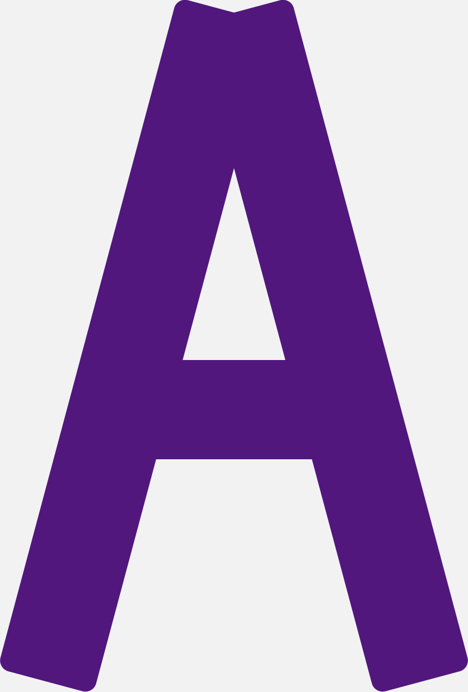

It's me,
Ruby Crawshaw
I'm studying at Massey University Wellington.
I'm studying at Massey University Wellington.
Το όνομά μου είναι Ruby Crawshaw και αυτό είναι δικό μου χαρτοφυλάκιο, το οποίο είναι εξαιρετικά βαρετό και ίσως περίεργο γιατί μόλις άρχισα να μαθαίνω html.Το όνομά μου είναι Ruby Crawshaw και αυτό είναι δικό μου χαρτοφυλάκιο, το οποίο είναι εξαιρετικά βαρετό και ίσως περίεργο γιατί μόλις άρχισα να μαθαίνω html.Το όνομά μου είναι Ruby Crawshaw και αυτό είναι δικό μου χαρτοφυλάκιο, το οποίο είναι εξαιρετικά βαρετό και ίσως περίεργο γιατί μόλις άρχισα να μαθαίνω html.
I first started school at the age of five, I was a keen artist and had a creative mind from the start. At the age of seven I joined the circus in after school hours, I spent most of my time from the age of seven up until I was fifteen performing and doing stunts for the circus.
I started college when I was thirteen and instantly made many life-long friends. I kept performing at the circus until I was fifteen and then too up Roller Derby. This was a big change but was well worth the hard work and effort, to this day I still play Roller Derby.
I am now a student studying at Massey University, I plan on studying towards getting a Bachelor in Design and Visual Communication.
I have also had to move down to Wellington the capital of New Zealand to be closer to Massey University. I am adjusting to the Wellington student life, partying every weekend and also having next to no money.
Drawing


Creativity

Maths


English
